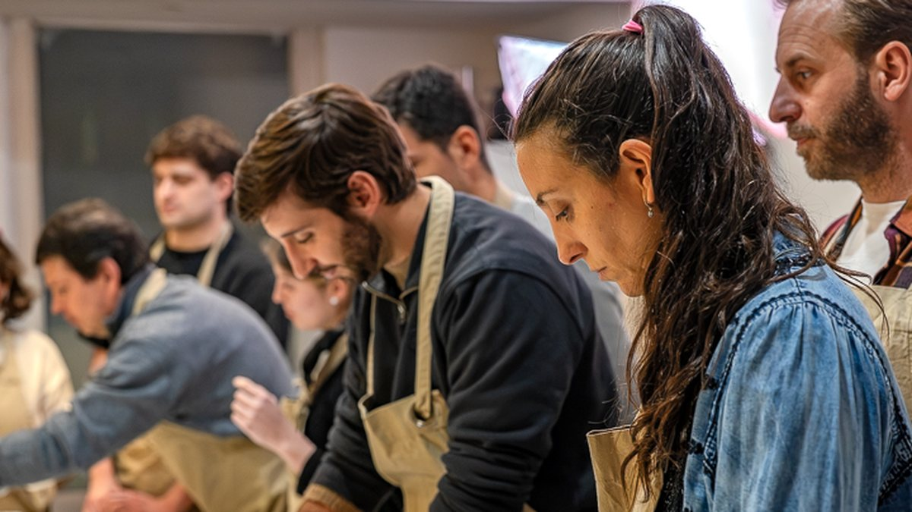
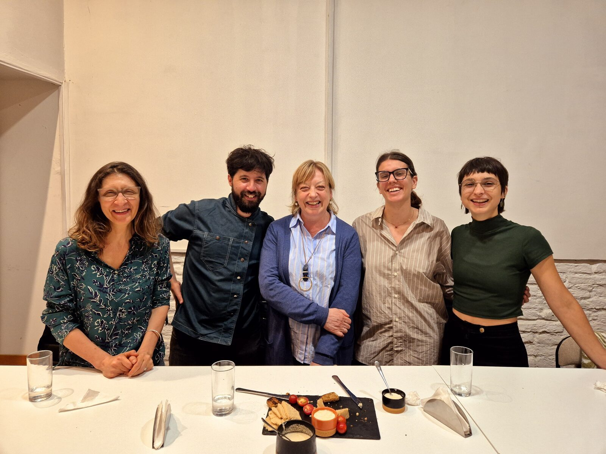
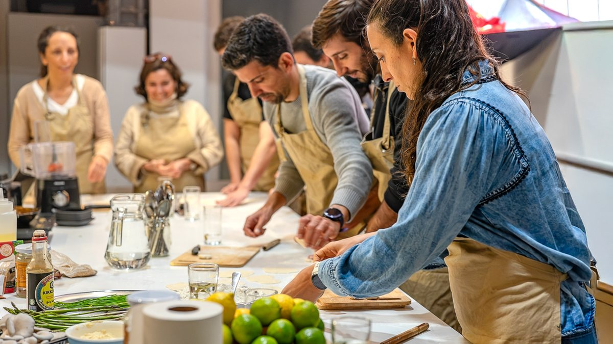
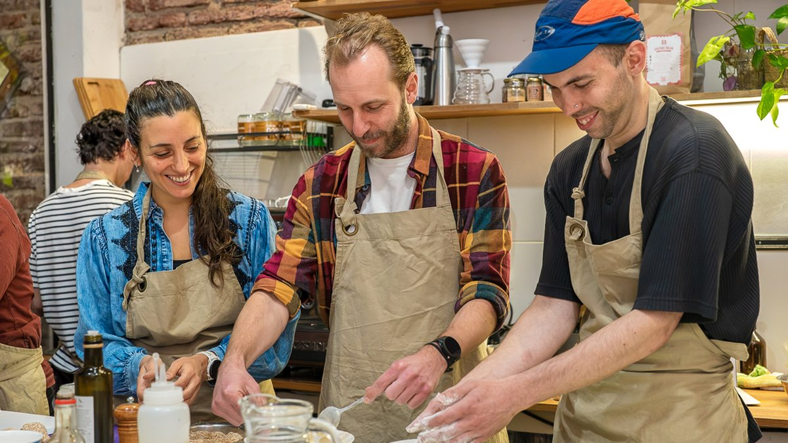

Una noche o un mediodía de cocina, solo para tu grupo.
Es la Cena y Taller de Tapeo, sin nadie de afuera. Entre todos cocinan cuatro tapas, aprenden cada técnica y después se sientan a comer todo lo que prepararon.
4,9 en 27 reseñas en Google.

Para quién es.
Es para cualquier grupo que quiera juntarse a cocinar y comer.
- AmigosEs una salida distinta: en vez de ir a comer afuera, cocinan juntos y comen lo que hicieron.
- CumpleañosEl festejo es la mesa del final, con todo lo que cocinó el grupo.
- FamiliasCada uno tiene su puesto en la mesada y todos terminan en la misma mesa.
- Despedidas de fin de añoEn diciembre podés cerrar el año con tu grupo o con tu equipo.
- Equipos de trabajoPara empresas está el team building gastronómico, que también se puede hacer en la empresa.
Qué cocinan.
Son las mismas cuatro tapas de la Cena y Taller de Tapeo. Cada uno trabaja en su puesto y Leonardo explica cada técnica.
Si prefieren otro taller, también armamos en privado el de pastas sin gluten, el de alfajores sin gluten o el de pan sin gluten con masa madre.
- Gyozas de hongos y verduras con salsa teriyaki
- Gírgolas asadas sobre puré de coliflor
- Buñuelos de chucrut con salsa picante
- Croquetas de puerro con alioli de lima
Qué incluye.
- Los insumos. No hay que traer nada.
- El recetario. Lo reciben para repetir las tapas en casa.
- La cena. Al final se sientan a comer todo lo que prepararon.
No hace falta saber cocinar: Leonardo acompaña al grupo todo el tiempo. Si alguien no come gluten o tiene una alergia, lo vemos al coordinar y adaptamos el plato.
Es en nuestro estudio, Maldonado 1976 esq. Blanes, Parque Rodó. Para equipos de trabajo también puede ser en la empresa.



Despedí el año cocinando.
En diciembre armamos una noche o un mediodía solo para tu grupo o tu equipo. Entre todos cocinan cuatro tapas, aprenden y después comparten la mesa. Puede ser en nuestro estudio de Parque Rodó o en tu empresa.
Para empresas.
Para equipos de trabajo armamos el team building gastronómico. Es la misma idea de cocinar juntos y compartir la mesa. La hacemos en el estudio o en la empresa, con una propuesta a medida.
Lo que más nos preguntan.
¿Hay que saber cocinar?
No. Leonardo acompaña al grupo todo el tiempo y explica cada técnica.
¿Cuántas personas entran?
Entran hasta 20 personas en el espacio habitual y hasta 25 en el espacio del fondo.
¿Cuánto dura?
De noche es de 19:00 a 22:30. Si prefieren el mediodía, coordinamos el horario al armar la propuesta.
¿Y si alguien no come gluten o tiene una alergia?
Lo vemos al coordinar y adaptamos el plato.
¿Se puede hacer en la empresa?
Sí, para equipos de trabajo. Para eso está el team building gastronómico.
¿Se puede hacer otro taller en privado?
Sí. La Cena y Taller de Tapeo es la propuesta principal. Si prefieren otra técnica, armamos en privado el taller de pastas sin gluten, el de alfajores sin gluten o el de pan sin gluten con masa madre. Contanos cuántos son y qué fecha tienen en mente.
¿Cuánto sale?
Depende de cuántos son, el formato y la fecha. Contanos y te armamos la propuesta.
Contanos cuántos son y qué fecha tienen en mente.
Con eso te armamos la propuesta. Leonardo responde cada consulta personalmente.